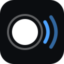

--:--:--.---
Zeit: –
–

Blitz + Ton zu jeder vollen Sekunde echter UTC-Zeit
Handy-Bildschirm in die Kamera halten, Lautsprecher zum Mikrofon. Stummschalter aus, Helligkeit hoch. Tippen auf den Bildschirm öffnet wieder dieses Menü.
Tipps: Stummschalter aus, Lautstärke hoch, Auto-Sperre aus. Rauschunterdrückung am Mikrofon während der Messung abschalten. Liegt die Seite auf dem OBS-PC im WLAN (Adresse im Dock), ist die Uhr am genauesten.
Korrekturen gleichen die feste Eigenverzögerung dieses Handys aus (positiv = Bild bzw. Ton kommt später als berechnet). Werte werden lokal gespeichert.